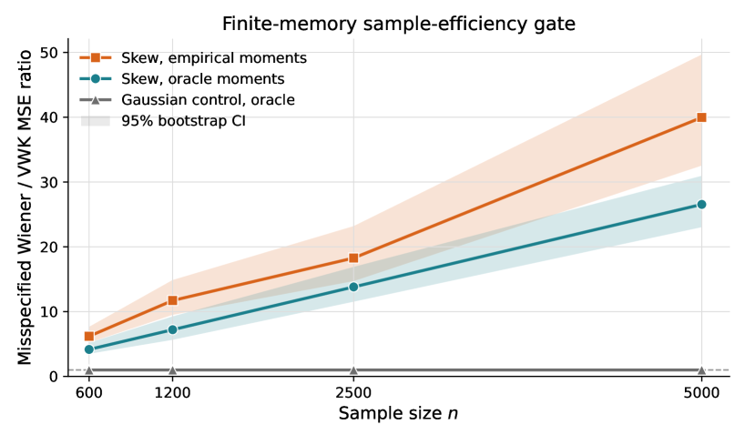

Includes a machine-checked Lean 4 proof establishing the Binomial(N,p) Krawtchouk row for arbitrary N.
Abstract
The monomial parameterization of finite-memory Volterra identification is ill-conditioned under non-Gaussian input, and the Wiener--Hermite expansion removes this ill-conditioning only for Gaussian white-noise input. We construct the distribution-matched Volterra--Wiener--Kunchenko (VWK) basis by oriented Gram--Schmidt orthogonalization of monomials in $L^2(P)$ and use it as an arbitrary-polynomial-chaos coordinate system for finite-memory Volterra identification from data, following the generalized polynomial chaos of Xiu and Karniadakis (2002) and the data-driven arbitrary polynomial chaos of Oladyshkin and Nowak (2012). The basis itself is classical; the contribution is the Volterra-estimation reading. First, an order-2 misspecification-penalty theorem shows that a self-normalized diagonal estimator in the variance-matched Gaussian basis incurs an excess $L^2(P)$ risk governed by the skew coefficient $δ=μ_3/σ^2$, vanishing exactly for symmetric inputs. Second, conditioning experiments separate the constructional fact that the population matched Gram is the identity from the finite-sample design Gram: at $n=2000$, the centered-exponential empirical VWK Gram remains far better conditioned than the power Gram, although it degrades with degree. Third, a machine-checked Lean 4 proof establishes the Binomial$(N,p)$ Krawtchouk row for arbitrary $N$. Full least squares over a fixed span is basis-invariant, so VWK stabilizes diagonal cross-correlation and regularized coordinate fits rather than claiming universal prediction superiority. The analysis is moment-based, finite-memory, and restricted to product input laws.
Problem
Monomial parameterization of finite-memory Volterra system identification is ill-conditioned under non-Gaussian input, and the Wiener-Hermite expansion removes this only for Gaussian white-noise input.
Approach
The authors construct a distribution-matched Volterra-Wiener-Kunchenko (VWK) basis by oriented Gram-Schmidt orthogonalization of monomials in L^2(P), used as an arbitrary-polynomial-chaos coordinate system. They prove an order-2 misspecification-penalty theorem for a self-normalized diagonal estimator and run conditioning experiments. A machine-checked Lean 4 proof establishes the Binomial(N,p) Krawtchouk row for arbitrary N.
Results
The centered-exponential empirical VWK Gram stays far better conditioned than the power Gram at n=2000, and the Lean-verified Krawtchouk identity holds for arbitrary N; excess L^2(P) risk is governed by the skew coefficient and vanishes for symmetric inputs.

Figure 2: Sample-efficiency curve for the finite-memory experiment. The skew regime shows a persistent misspecified-Wiener penalty, whereas the Gaussian control remains neutral for oracle moments. Shaded regions are 95\% bootstrap confidence bands for the ratio of means; the Gaussian-control band collapses to the line because its Wiener and VWK estimators coincide replicate by replicate.